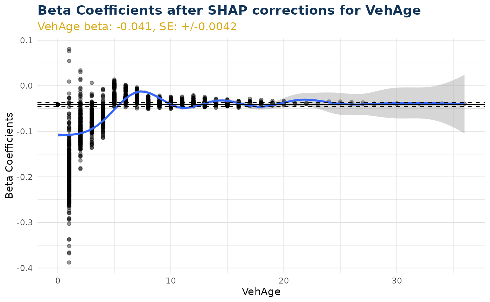

Create Pre-Configured Beta Corrected Scatter Plot Function
Source:R/create_beta_correction_plot_functions.R
create_beta_corrected_scatter.RdFactory function that returns a plotting function with data pre-configured.
Examples
# ------- prepare iblm objects required -------
df_list <- freMTPLmini |> split_into_train_validate_test(seed = 9000)
iblm_model <- train_iblm_xgb(
df_list,
response_var = "ClaimRate",
family = "poisson"
)
test_data <- df_list$test
shap <- extract_booster_shap(iblm_model$booster_model, test_data)
wide_input_frame <- data_to_onehot(test_data, iblm_model)
shap_wide <- shap_to_onehot(shap, wide_input_frame, iblm_model)
beta_corrections <- beta_corrections_derive(shap_wide, wide_input_frame, iblm_model)
data_glm <- data_beta_coeff_glm(test_data, iblm_model)
data_booster <- data_beta_coeff_booster(test_data, beta_corrections, iblm_model)
data_beta_coeff <- data_glm + data_booster
# ------- demonstration of functionality -------
# create_beta_corrected_scatter() can create function of type 'beta_corrected_scatter'
my_beta_corrected_scatter <- create_beta_corrected_scatter(data_beta_coeff, test_data, iblm_model)
# this custom function then acts as per beta_corrected_scatter()
my_beta_corrected_scatter(varname = "VehAge")
#> `geom_smooth()` using method = 'gam' and formula = 'y ~ s(x, bs = "cs")'
